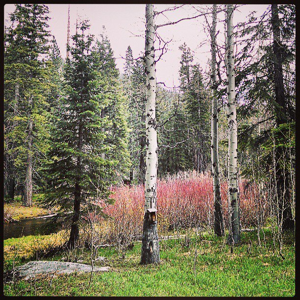
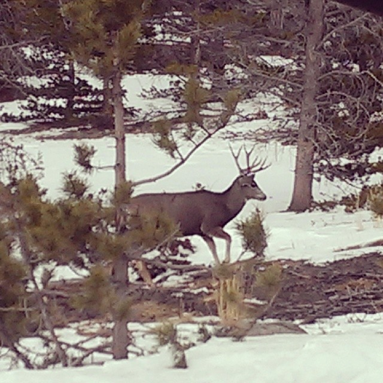
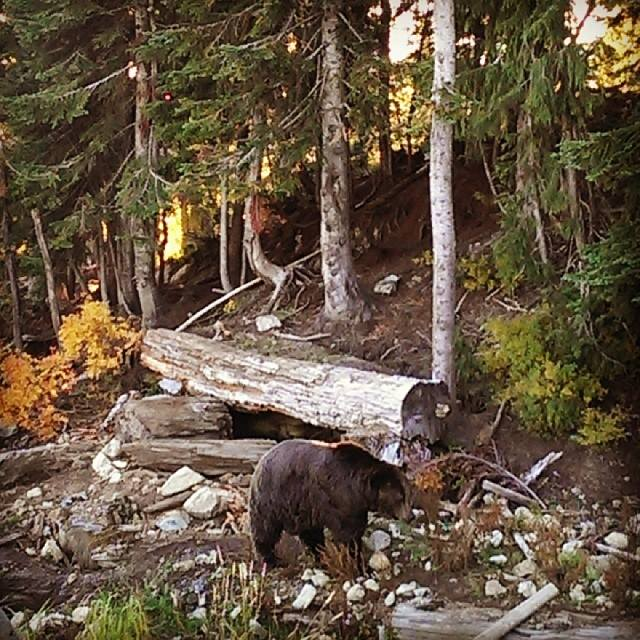
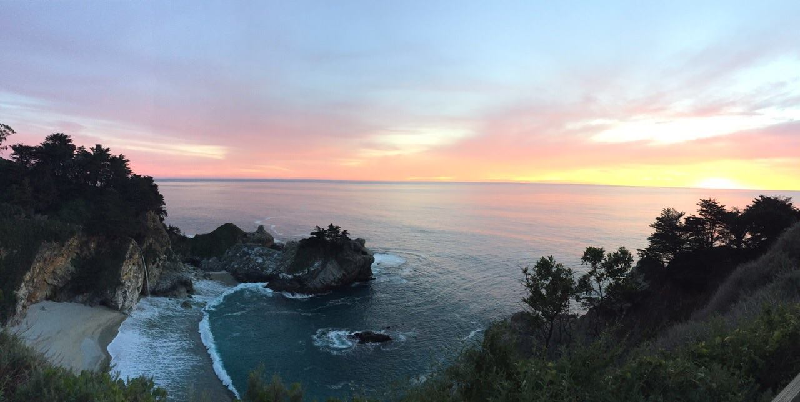

Travel...
Travel is the only thing you buy that makes you richer...
-

The Sierra Nevada of the U.S, along the state line of California and Nevada
Lake Tahoe is a large freshwater lake in the Sierra Nevada of the United States. Lying at 6,225 ft (1,897 m), it straddles the state line between California and Nevada, west of Carson City. Lake Tahoe is the largest alpine lake in North America.
The lake was formed about 2 million years ago as part of the Lake Tahoe Basin, with the modern extent being shaped during the ice ages. It is known for the clarity of its water and the panorama of surrounding mountains on all sides. The area surrounding the lake is also referred to as Lake Tahoe, or simply Tahoe. More than 75% of the lake's watershed is national forest land, comprising the Lake Tahoe Basin Management Unit of the United States Forest Service.
Lake Tahoe is a major tourist attraction in both Nevada and California. It is home to winter sports, summer outdoor recreation, and scenery enjoyed throughout the year. Snow and ski resorts are a significant part of the area's economy and reputation.[5][6] The Nevada side also offers large casinos, with highways providing year-round access to the entire area.
-

Colorado is a state of the United States encompassing most of the southern Rocky Mountains as well as the northeastern portion of the Colorado Plateau and the western edge of the Great Plains. It is the 8th largest geographically and 21st most populous U.S. state.
The state was named for the Colorado River, which Spanish travelers named the Río Colorado for the ruddy silt the river carried from the mountains.
Colorado is nicknamed the "Centennial State" because it became a state a century after the signing of the United States Declaration of Independence.
Colorado is bordered by Wyoming to the north, Nebraska to the northeast, Kansas to the east, Oklahoma to the southeast, New Mexico to the south, Utah to the west, and touches Arizona to the southwest at the Four Corners. Colorado is noted for its vivid landscape of mountains, forests, high plains, mesas, canyons, plateaus, rivers, and desert lands. Colorado is part of the western or southwestern United States, and one of the Mountain States.
Denver is the capital and most populous city of Colorado. Residents of the state are known as Coloradans, although the term "Coloradoan"
-

Vancouver is a coastal seaport city in Canada, located in the Lower Mainland region of British Columbia. As the most populous city in the province. It is the third-largest metropolitan area in Canada. Vancouver has the highest population density in Canada. Vancouver is one of the most ethnically and linguistically diverse cities in Canada according to that census; 52% of its residents have a first language other than English. Vancouver is classed as a Beta global city.
Vancouver is consistently named as one of the top five worldwide cities for livability and quality of life, and the Economist Intelligence Unit acknowledged it as the first city ranked among the top-ten of the world's most well-living cities[ for five consecutive years. Vancouver has hosted many international conferences and events, including the 1954 British Empire and Commonwealth Games, UN Habitat I, Expo 86, the World Police and Fire Games in 1989 and 2009; and the 2010 Winter Olympics and Paralympics which were held in Vancouver and Whistler, a resort community 125 km (78 mi) north of the city.
-

Big Sur is a rugged section of California's Central Coast between Carmel Highlands and San Simeon, where the Santa Lucia Mountains rise abruptly from the Pacific Ocean, that is frequently praised for its dramatic views. Big Sur has been called the "longest and most scenic stretch of undeveloped coastline in the contiguous United States,"a "national treasure that demands extraordinary procedures to protect it from development" and "one of the most beautiful coastlines anywhere in the world, an isolated stretch of road, mythic in reputation." Big Sur's Cone Peak at 5,155 feet (1,571 m) is only 3 miles (5 km) from the ocean and is the tallest coastal mountain in the contiguous United States. The stunning views make Big Sur a popular global tourist destination. It receives about the same number of visitors as Yosemite National Park which has led to ongoing, lengthy traffic backups and parking issues, especially during summer vacation periods and holiday weekends.